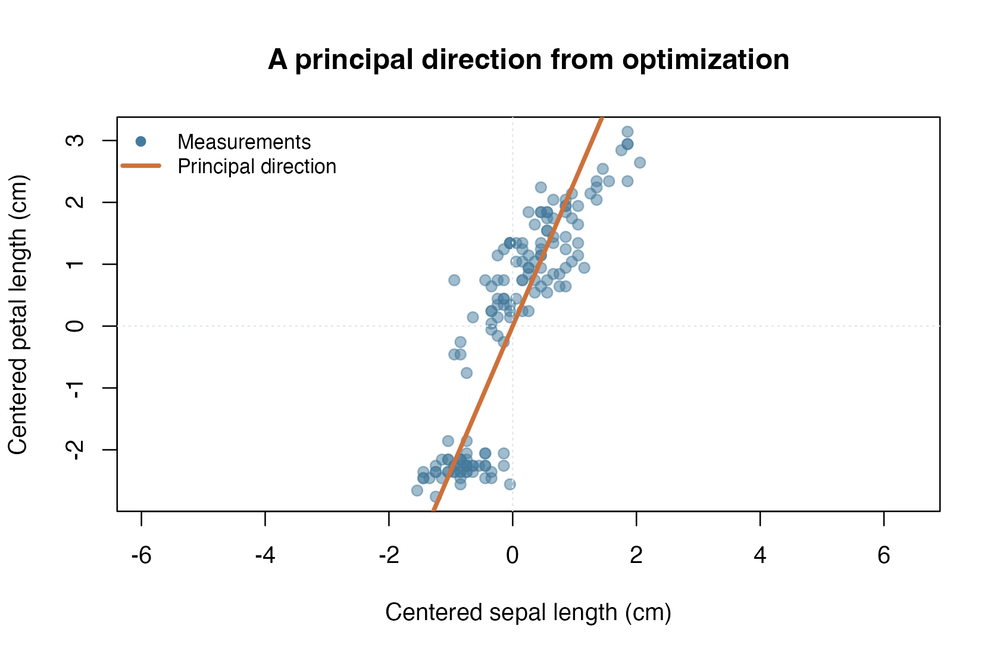
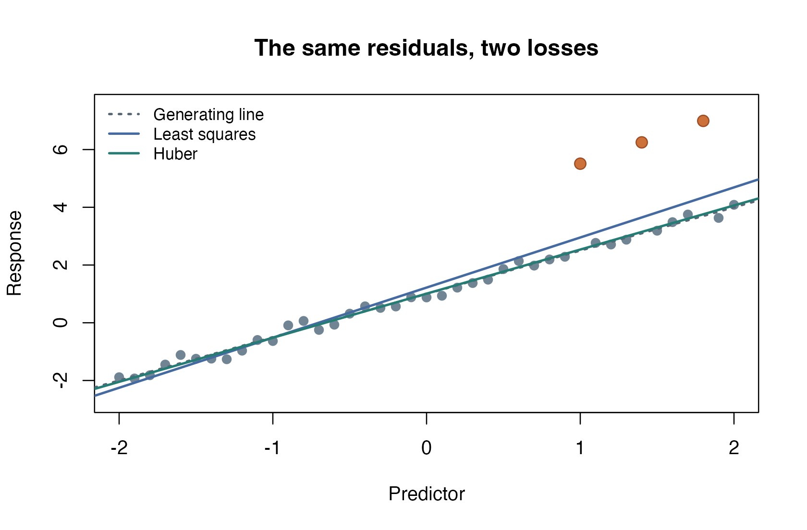
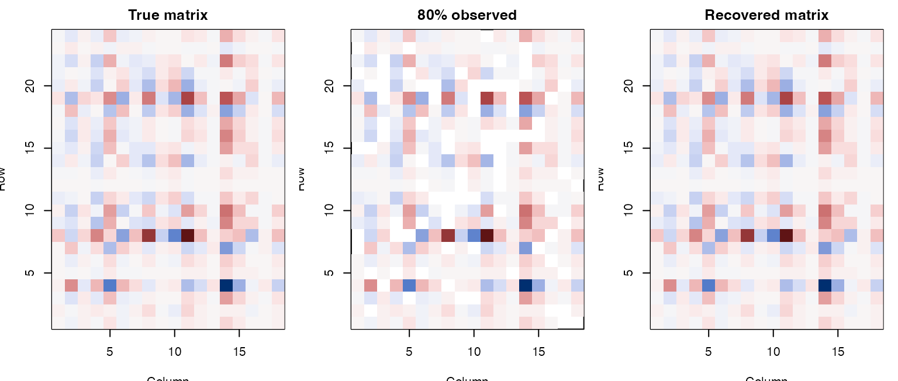
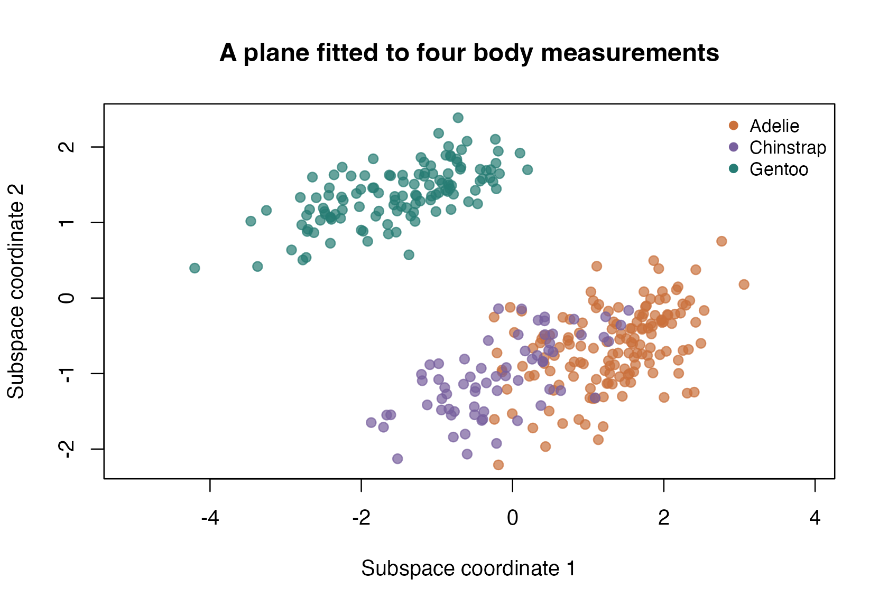
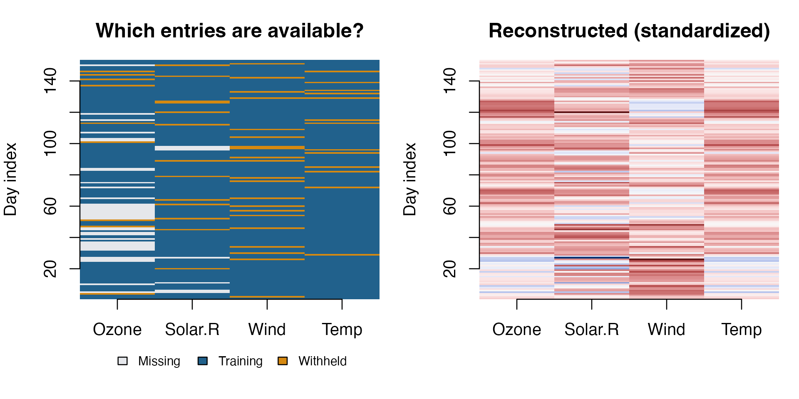
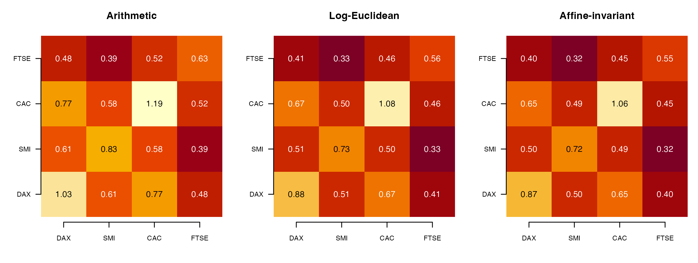
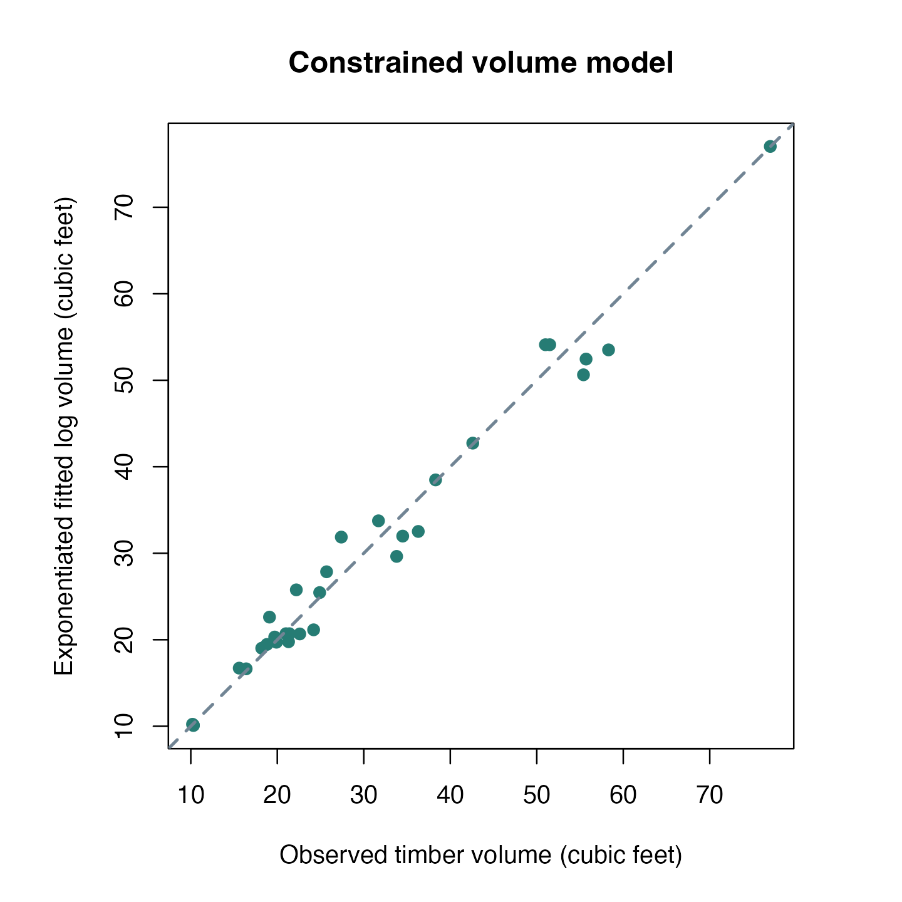
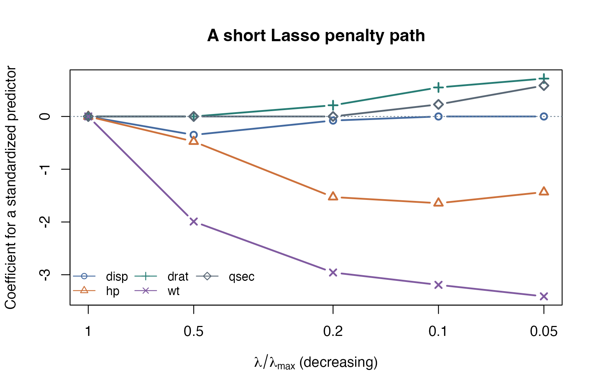

Start with a foundation example to learn the problem interface, or choose a public-data application close to your work. Every page contains runnable code, figures, and checks of the numerical result. The six applications use data already included with R or bundled in this website; no dataset download is needed when building the documentation.
Foundations
These short introductions isolate the optimization ideas. The sphere example uses two iris measurements; the other three construct small synthetic problems with known reference answers.

Recover the direction of greatest variation in two iris measurements.

See how Huber loss changes a regression fit when observations contain outliers.

Compare a geometric midpoint with the arithmetic average of two covariance shapes.

Recover missing entries while keeping the matrix in a compact rank-two representation.
Public-data applications
Each application starts with the observations and explains how the objective relates to the question being asked. The independent checks are available after the main workflow, so you can follow the data analysis before studying its numerical details.

Project four penguin body measurements onto a two-dimensional plane and compare with PCA.

Fit quadratic and Huber models to industrial measurements and inspect their residuals.

Fill gaps in environmental measurements and assess predictions on held-out observations.

Compare geometric averages of covariance matrices estimated from stock-index returns.
Constraints and sparsity
Euclidean space also fits the manifold interface. These examples use it to make equality constraints, inequalities, and an exact proximal operator easy to understand and verify.

Fit a log-volume model with nonnegative slopes that sum to three, then check the constraints.

Follow regression coefficients across five L1 penalties using an exact soft-thresholding step.
Reading the results
The CPU times are measured complete article render times, not solver-only benchmarks or speed guarantees. They include data preparation, independent checks, figures, and HTML rendering in fresh R sessions. Values are the mean of two serial runs on the reference machine: macOS arm64, R 4.5.2, torch 0.17.0, CPU float64, one torch thread. The timing table contains both measurements.
Each public-data example reports its termination reason and the residuals appropriate to the method. A small training loss is not proof of accurate missing-value predictions, and a stopped iteration budget is not convergence. The articles discuss these distinctions using their actual results.
Use device = "auto" to request automatic device
selection or device = "cpu" to force CPU execution,
including on a GPU workstation. An explicit CUDA device must be
available and support the requested precision. See the device guide.
For citations, units, missing values, the penguin CSV, and the reproducibility procedure, see Data sources and reproducibility.